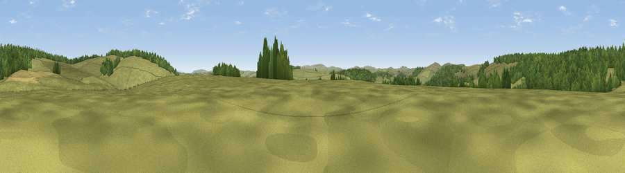

Viewpoint c5720_6366
#38086 in England · top 94% of its area beats it · —The view, rendered

A 360° render of this exact spot computed from the terrain model, tree cover and land cover — summer colours, afternoon light, calibrated against photographs of famous viewpoints. Real trees, hedges and buildings will differ in detail.
The panorama
Grey silhouette: terrain skyline in each direction (720 bearings, Earth curvature and refraction included). Dashed green: skyline with trees (+15 m) and buildings (+8 m) as obstacles. Blue strip: how far the ground is visible on each bearing.
Where the view opens
Wedge length = distance to the farthest visible ground on that bearing (vegetation-aware). Rings at 10, 25 and 50 km.
What fills the view
61% grassland · 36% woodland · 3% cropland
Angular shares of the visible panorama (visual magnitude), not map area. Landscape diversity 0.34 (0–1 Shannon).
Key numbers
More beautiful places nearby
The staircase of upgrades: each row has a higher view potential than everything closer. Driving times are estimates from straight-line distance, calibrated against real road routing — check an actual route before setting out.
| Place | Direction | Drive | Score |
|---|---|---|---|
| Viewpoint c5744_6376 | NNE · 1 km | ~4 min | 46.3 |
| Viewpoint c5731_6402 | ENE · 2 km | ~5 min | 60.4 |
| Viewpoint c5772_6450 | ENE · 5 km | ~11 min | 72.5 |
| Viewpoint near Bishop's Castle | ENE · 10 km | ~19 min | 75.5 |
| Viewpoint near Lydham | ENE · 17 km | ~30 min | 78.6 |
| Viewpoint near Hopton Castle | ESE · 20 km | ~33 min | 79.3 |
| Viewpoint near Asterton | E · 21 km | ~35 min | 83.0 |
| Viewpoint near Halfway House | NNE · 30 km | ~47 min | 83.3 |
52.46603, -3.20366 · source: screening · position refined by local search. Computed location — check access rights before visiting.